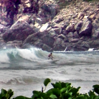

Fattal et al. 2002 Tone Mapping
Adapt an image, which may have a high dynamic range, for presentation using a low dynamic range. This operator attenuates the magnitudes of local image gradients, producing luminance within the range 0.0-1.0. This tonemapping approach was originally presented by Raanan Fattal, in the 2002 SIGGRAPH paper: Gradient Domain High Dynamic Range Compression.
Alpha
Gradient threshold for detail enhancement
name: alpha
type: double
default: 1.00
minimum: 0.00
maximum: 2.00
ui-minimum: 0.00
ui-maximum: 2.00
ui-gamma: 1.00
ui-step-small: 0.00
ui-step-big: 0.10
ui-digits: 3
Beta
Strength of local detail enhancement
name: beta
type: double
default: 0.90
minimum: 0.10
maximum: 2.00
ui-minimum: 0.10
ui-maximum: 2.00
ui-gamma: 1.00
ui-step-small: 0.00
ui-step-big: 0.10
ui-digits: 3
Saturation
Global color saturation factor
name: saturation
type: double
default: 0.80
minimum: 0.00
maximum: 1.00
ui-minimum: 0.00
ui-maximum: 1.00
ui-gamma: 1.00
ui-step-small: 0.00
ui-step-big: 0.10
ui-digits: 3
Noise
Gradient threshold for lowering detail enhancement
name: noise
type: double
default: 0.00
minimum: 0.00
maximum: 1.00
ui-minimum: 0.00
ui-maximum: 1.00
ui-gamma: 1.00
ui-step-small: 0.00
ui-step-big: 0.10
ui-digits: 3
pads: input output
parent-class: GeglOperationFilter
categories: tonemapping enhance
source: operations/common/fattal02.c
 This page is part of the online GEGL Documentation, GEGL is a data flow based image processing library/framework, made to fuel GIMPs high-bit depth non-destructive editing future.
This page is part of the online GEGL Documentation, GEGL is a data flow based image processing library/framework, made to fuel GIMPs high-bit depth non-destructive editing future.